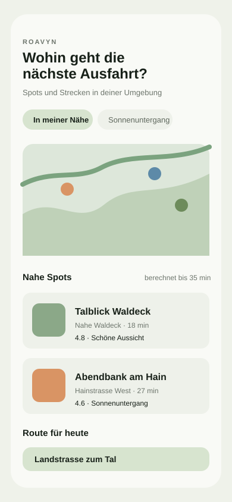
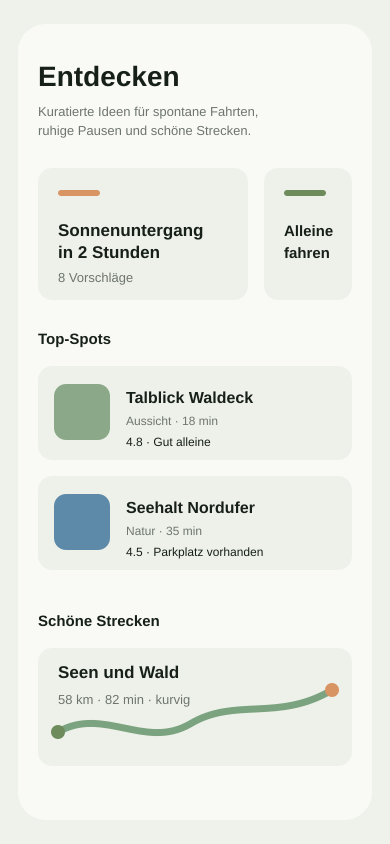

Spots in deiner Nähe
Aussicht, Sonnenuntergang, ruhige Orte und legale Parkmöglichkeiten kompakt gesammelt.
ROAVYN
Roavyn sammelt ruhige Aussichtspunkte, kurze Runden und schöne Strecken für spontane Fahrten, Pausen im Grünen und Abende ohne langes Suchen.

Die Idee
Aussicht, Sonnenuntergang, ruhige Orte und legale Parkmöglichkeiten kompakt gesammelt.
Kuratierte Routen für kurze Runden, entspannte Landstraßen und Pausen mit Aussicht.
Feedback aus der Praxis entscheidet, welche Funktionen als Nächstes entstehen.
Look & Feel
Die Website greift die Naturtöne, kompakten Karten und Chips aus Roavyn auf. Kein lauter Launch-Hype, sondern eine klare Einladung für Menschen, die das Produkt früh ausprobieren wollen.

Newsletter & Beta
Trag dich ein, wenn du Updates erhalten oder Roavyn als Beta-Tester ausprobieren möchtest. Newsletter-Anmeldungen sollten später per Double-Opt-In bestätigt werden.